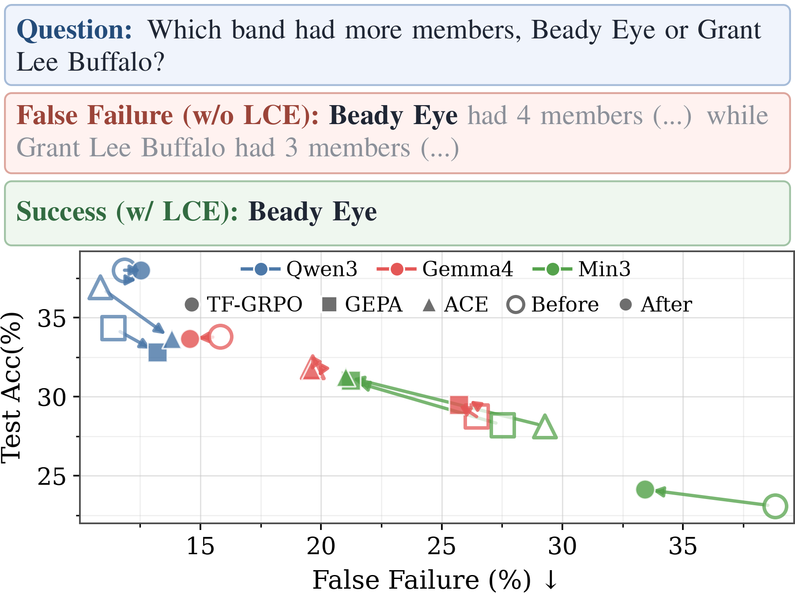
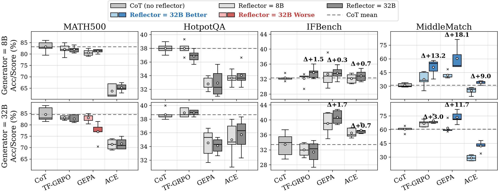
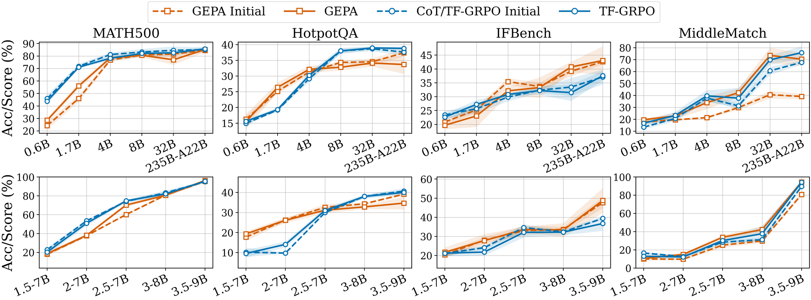
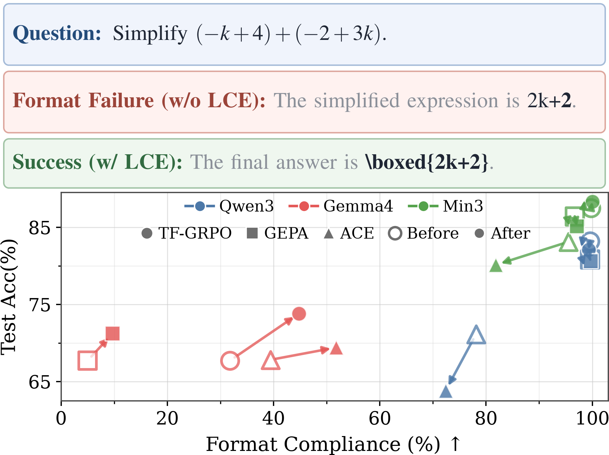

Overview
As large language models (LLMs) are used in more and more new tasks, context engineering becomes a fundamental method to efficiently steer LLMs by constructing instruction prompts or metadata without intensive training. A growing number of LLM context engineering (LCE) approaches automate the task by casting the LLM itself as the engineer that draws generalizable instructions or experiences from offline trials as context. Although these methods resemble how humans learn from experiences, it remains unclear when and how LLMs can engineer effective context from data. To answer the question, we first establish a benchmark composed of datasets with different reasoning patterns. We then examine when LCEs are effective and what drives their successes and failures.
- LLMs can engineer contexts via task-specific training, but no single method can achieve the best performance in all datasets at test time.
- Scaling helps but cannot reverse existing failures of LCEs. Even scaling to newer generations and more parameters remains insufficient to make LCEs more effective across different settings.
- When & How: Through aggregate analysis, we find that LCEs work better when facing less diverse failure modes of reasoning. Case studies show that the ability to abstract principled contexts from heterogeneous failures is the major bottleneck and that the success of some LCE methods is attributed to the improvement in adherence to (format) instruction rather than reasoning.
Benchmark of LCEs
No free lunch for LCEs at test time. We compare the representative LCEs across various tasks, from math reasoning to agentic tasks, using three LLM families, with Chain-of-Thought (CoT) Prompting and In-Context Learning (ICL) included as reference baselines.
| Model | Dataset | CoT | ICL | TF-GRPO | GEPA | ACE | Δbest |
|---|---|---|---|---|---|---|---|
| Qwen3 | MiddleMatch | 31.27 ± 2.10 | 46.07 ± 4.80 | 37.73 ± 8.57 (+6.47) | 42.33 ± 3.80 (+12.53) | 25.20 ± 3.96 (+4.73) | −3.74 |
| IFBench | 32.35 ± 0.82 | 30.54 ± 0.94 | 32.21 ± 1.58 (−0.14) | 33.30 ± 3.64 (−0.37) | 32.17 ± 1.28 (+0.64) | +0.95 | |
| MATH500 | 83.20 ± 2.51 | 79.80 ± 1.04 | 82.10 ± 2.43 (−1.10) | 80.60 ± 1.43 (−0.20) | 63.80 ± 2.93 (−7.30) | −1.10 | |
| HotpotQA | 38.00 ± 0.75 | 37.60 ± 0.83 | 38.00 ± 0.97 (0.00) | 32.80 ± 0.99 (−1.54) | 33.67 ± 0.97 (−3.26) | 0.00 | |
| AppWorld | 21.55 ± 1.95 | 23.10 ± 3.89 | 23.69 ± 2.08 (+2.14) | 23.33 ± 1.54 (+0.48) | 18.93 ± 1.29 (−3.45) | +0.59 | |
| Gemma4 | MiddleMatch | 79.33 ± 1.93 | 80.47 ± 2.32 | 90.13 ± 3.43 (+10.80) | 93.33 ± 2.91 (+7.40) | 87.47 ± 6.16 (+0.73) | +12.86* |
| IFBench | 39.76 ± 2.22 | 34.63 ± 2.17 | 41.63 ± 1.21 (+1.87) | 46.70 ± 4.54 (−1.22) | 42.09 ± 1.43 (+1.13) | +6.94* | |
| MATH500 | 67.70 ± 1.04 | 77.90 ± 3.54 | 73.80 ± 4.12 (+6.10) | 71.20 ± 1.92 (+3.50) | 69.40 ± 1.14 (+1.60) | −4.10 | |
| HotpotQA | 33.80 ± 0.80 | 32.60 ± 3.27 | 33.67 ± 1.29 (−0.13) | 29.47 ± 1.45 (+0.73) | 31.67 ± 0.78 (−0.20) | −0.13 | |
| AppWorld | 25.24 ± 2.25 | 26.67 ± 2.50 | 29.05 ± 3.13 (+3.81) | 28.81 ± 0.68 (+1.67) | 26.07 ± 4.40 (−0.36) | +2.38 | |
| Min3 | MiddleMatch | 62.00 ± 3.44 | 49.53 ± 3.91 | 71.40 ± 6.46 (+9.40) | 59.60 ± 4.64 (+22.20) | 38.93 ± 8.69 (−1.07) | +9.40* |
| IFBench | 28.50 ± 2.19 | 26.46 ± 1.87 | 28.57 ± 1.88 (+0.07) | 36.70 ± 1.84 (+0.82) | 31.21 ± 1.90 (+0.27) | +8.20* | |
| MATH500 | 87.50 ± 1.06 | 68.10 ± 2.41 | 88.30 ± 1.15 (+0.80) | 85.10 ± 1.43 (−1.30) | 80.10 ± 3.90 (−3.00) | +0.80 | |
| HotpotQA | 23.07 ± 1.26 | 27.07 ± 0.95 | 24.13 ± 1.91 (+1.07) | 31.00 ± 1.60 (+2.80) | 31.27 ± 1.38 (+3.13) | +4.20* | |
| AppWorld | 26.43 ± 1.96 | 28.45 ± 2.12 | 27.14 ± 2.75 (+0.71) | 24.29 ± 7.52 (−1.90) | 30.60 ± 1.08 (+4.40) | +2.15 |
Performance of LCEs across LLM families. No method consistently improves the context.
- LCEs provide limited advantages over simple baselines. We observe that only 5 settings show significant improvements, and even among these settings, some gains stem from the initial context design rather than from engineering a better context during training.
- No clear winner among LCEs across datasets or models. The limitation suggests that there is no free lunch for LCEs – different models/datasets may need different LCE algorithms.
LCEs with Scaling
After testing LCE methods with 8B-scale models, we further investigate whether scaling up models can improve the effectiveness of LCEs.

- Bigger Reflector Can Cause More Gain but Also More Loss. We observe that although larger LLMs engineer more effective context in most settings on IFBench and MiddleMatch, they can even perform worse than smaller models on MATH500 and HotpotQA.

- Bigger/Newer Models Do Not Necessarily Enable LCE Better Than Smaller/Older Ones. Larger and newer models generally improve baseline performance, with no consistent trend in LCE effectiveness across model sizes or generations.
When & How
The study measures failure-mode diversity by embedding diagnoses of failed reasoning trajectories and computing their Vendi Score. Greater diversity is associated with smaller gains across model and dataset settings (r = −0.5, p ≤ 0.05).
- Less Diverse Failure Modes, Better The LCEs Work. The left figure clearly shows the negative correlation between diversity and performance gains across all LCE methods. The correlation is statistically significant for GEPA and TF-GRPO.
- In contrast, the ICL gains turn out to be irrelevant to the diversity. That means the relation hinges on the LLM operations, for example, reflection on failures, which are missing from ICL.
- The right figure shows that the Vendi Score of experiences changes little across iterations. That means the LLMs are not able to reduce the diversity of experiences by iteratively optimizing context, which explains why LCEs do not perform well on highly diverse tasks.
Case Study: LCEs improve adherence to the task instructions. In multiple samples, we notice that the experiences extracted in LCEs are related to the output format or instruction details, less relevant to problem solution ideas.


Case Study: TF-GRPO. To further investigate method-level failures, we conduct an additional ablation study with TF-GRPO, which has clearly separated workflow stages and achieves the best performance in more settings in the benchmark table across LCEs.
| Method | R | E | ϕ | k | MiddleMatchQ | MATH500G | MATH500M | IFBenchG |
|---|---|---|---|---|---|---|---|---|
| ICL > LCE > CoT | LCE ≥ CoT > ICL | |||||||
| CoT | 0 | 31.27 ± 2.10 | 67.70 ± 1.04 | 87.50 ± 1.06 | 39.76 ± 2.22 | |||
| ICL | ✓ | 3 | 46.07 ± 4.80 | 77.90 ± 3.54 | 68.10 ± 2.41 | 34.63 ± 2.17 | ||
| GRPO-ICL RAG | ✓ | 3 | 44.00 ± 3.46 | 74.10 ± 2.25 | 26.50 ± 4.23 | 37.41 ± 1.44 | ||
| All-Exps Random | ✓ | ✓ | 3 | 32.00 ± 6.00 | 69.70 ± 0.91 | 87.40 ± 0.55 | 40.92 ± 2.07 | |
| Final-Exps | ✓ | ✓ | ✓ | var. | 37.73 ± 8.57 | 73.80 ± 4.12 | 88.30 ± 1.15 | 41.63 ± 1.21 |
Performance under different experience utilization and retrieval settings.
Experience extraction (E) plays the most critical role. Across all four cases, either catastrophic performance loss (left two columns) or gain (right two columns) starts from the All-Exps Random, where Experience Extraction was first introduced to the ablation. That means when LLMs did not extract useful experiences from rollouts, the performance will not be improved over simply ICL of rollouts. Instead, when useful experiences are extracted (i.e., gains via E), the shorter experiences improve performance.
BibTeX
We would be delighted if you find our research helpful. Feel free to email zhangjunrui@u.nus.edu to discuss any insights or questions!
@article{zhang2026revisiting,
title = {Revisiting LLMs as Context Engineers},
author = {Zhang, Junrui and Xu, Zeyu and Zhu, Runchuan and Peng, Jie
and Zhang, Long and Ding, Zixin and Lin, Jiaxin and Wang, Kai
and Ji, Jianmin and Hong, Junyuan},
journal = {arXiv preprint arXiv:2611.30494},
year = {2026}
}